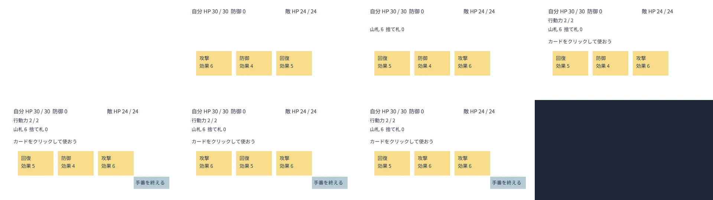
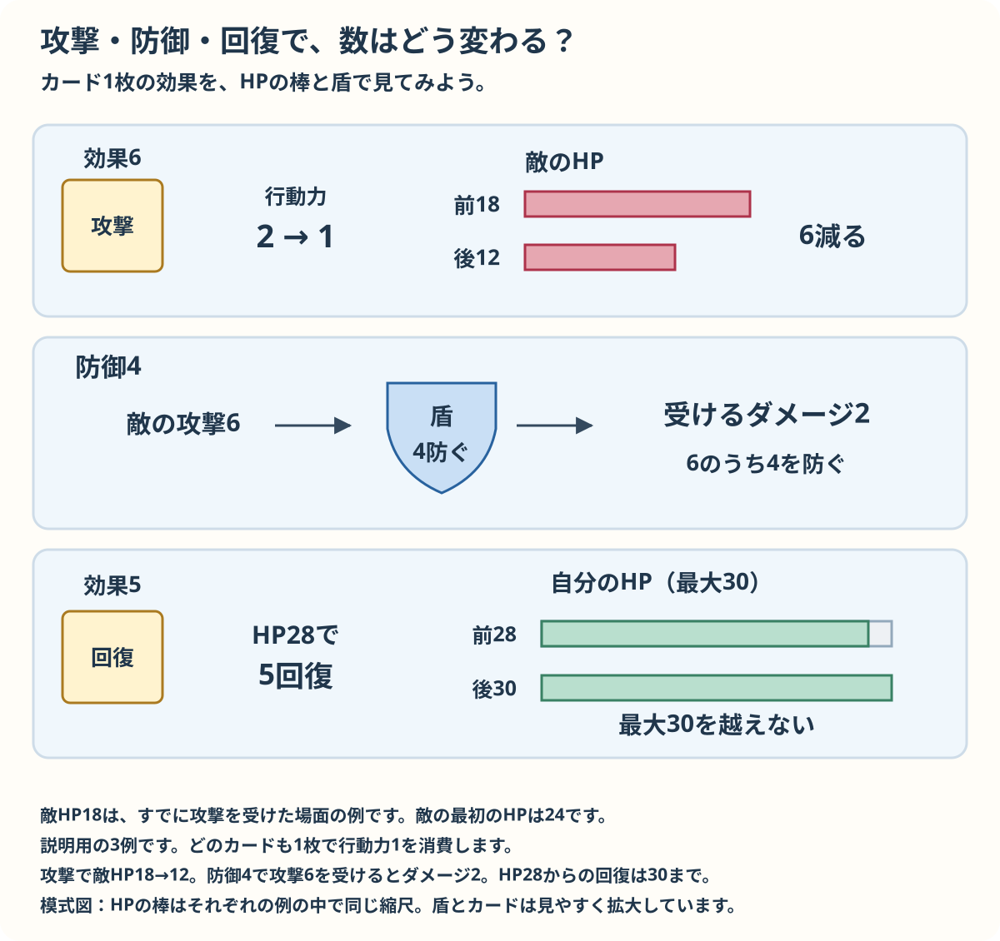
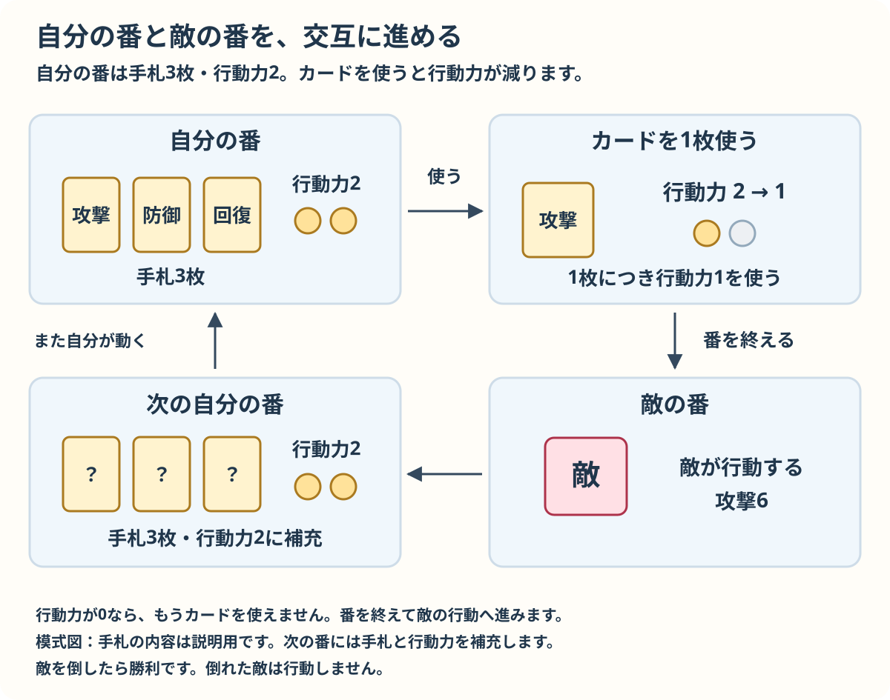
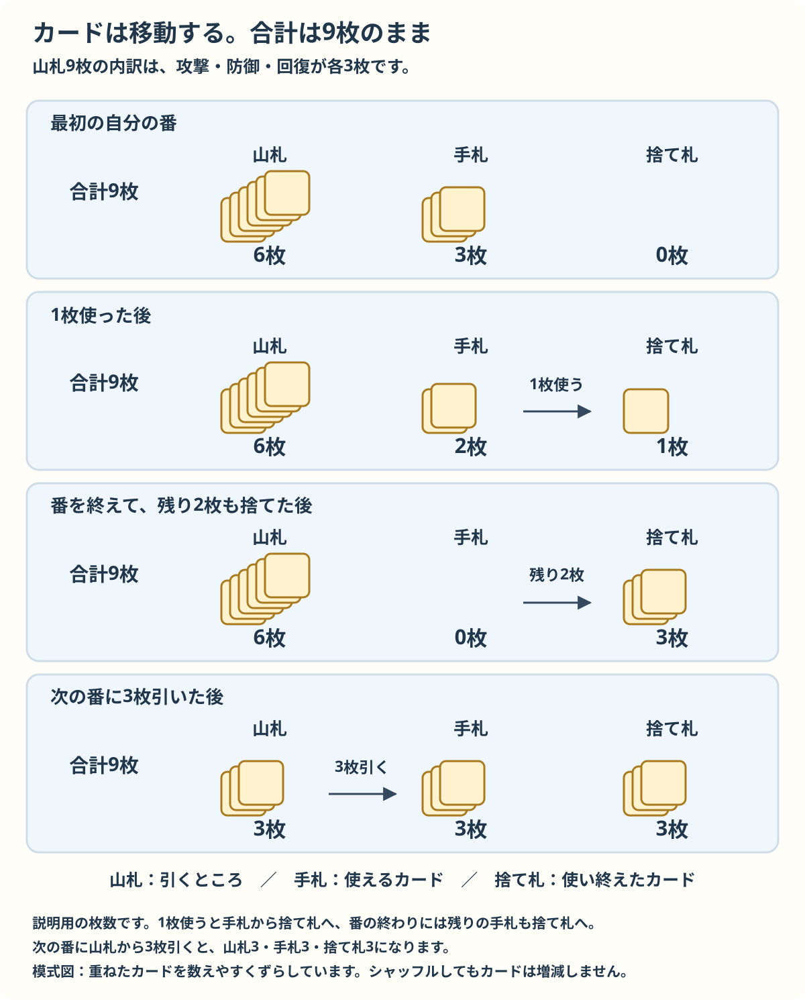

小さなカードバトル
上級者向け
攻撃・防御・回復のカードを使って敵1体と戦います。カードと「手番を終える」をクリックし、Rで再挑戦します。
始める前に
ZIPを展開してできたフォルダーでindex.htmlを開きます。ZIPにはひな型の3ファイルが入っています。
WindowsでZIPを展開する（動画）
3つのファイルは同じフォルダーに入っています。
各ステップでは作業用の script.js を開き、示した部分を順番に置き換えます。index.html と style.css は変更しません。保存後、作業用の index.html を開くか再読み込みします。
document.querySelector("#game-canvas") はHTMLのCanvasを選び、getContext("2d") で絵を描く道具を取り出します。start() は最初の設定、update() は更新、draw() は描画です。gameLoop() は requestAnimationFrame で更新と描画を繰り返します。
ステップ 1：カードとキャラクターを作る
このステップの見本を図で見る
new Card("attack", "攻撃", 6)
攻撃6のカードを描く
new Card("defend", "防御", 4)
防御4のカードを描く
new Card("heal", "回復", 5)
回復5のカードを描く
ゲーム画面とコードの前後を見る

このステップの見本
この行を足す前 変わったコードの一例（script.js）
this.block = 0;
見本で確かめること
攻撃6、防御4、回復5のカード、自分HP30、敵HP24が見えます。
目標
3種類のカードと自分・敵を表示します。
小作業を順に進め、確認欄で保存して動きを確かめます。
カードの種類と効果を覚える
script.js で次の目印の直前に追加します。
目印
function start() {追加するコード
class Card {
constructor(kind, label, amount) {
this.kind = kind;
this.label = label;
this.amount = amount;
}
}Card はカードの形を決めるクラスです。constructor は種類 kind、名前 label、効果の数 amount を受け取り、this でそのカード自身に保存します。
カードの見た目を描く
script.js で次の範囲を探して置き換えます。
置き換える範囲
this.amount = amount;
}
}置き換えるコード
this.amount = amount;
}
draw(x, y) {
ctx.fillStyle = "#f8dc8b";
ctx.fillRect(x, y, 160, 110);
ctx.fillStyle = "#26334a";
ctx.font = "22px sans-serif";
ctx.fillText(this.label, x + 15, y + 40);
ctx.fillText("効果 " + this.amount, x + 15, y + 75);
}
}draw(x, y) は左上の位置を受け取ります。幅160・高さ110の四角に、カード自身の名前と効果の数を描きます。
キャラクターの体力と防御を用意する
script.js で次の目印の直前に追加します。
目印
function start() {追加するコード
class Character {
constructor(name, maxHp) {
this.name = name;
this.maxHp = maxHp;
this.hp = maxHp;
this.block = 0;
}
}name は名前、maxHp は最大HPです。現在の hp は最大値から、防御の block は0から始めます。
自分・敵・手札を覚える
script.js で次の目印の直前に追加します。
目印
function start() {追加するコード
let player, enemy, hand;player と enemy に自分と敵、hand に手札を覚えます。
最初のカードとキャラクターを作る
script.js で次の目印の直後に追加します。
目印
function start() {追加するコード
player = new Character("自分", 30);
enemy = new Character("敵", 24);
hand = [new Card("attack", "攻撃", 6), new Card("defend", "防御", 4), new Card("heal", "回復", 5)];new で別々の実体を作ります。自分は最大HP30、敵は24。手札には攻撃6、防御4、回復5の3枚を入れます。
設計図から別々の実体を作る流れは脱出ゲームの図でも確認できます。図は本棚と引き出しの例です。
体力とカードを並べて表示する
script.js で次の目印の直後に追加します。
目印
ctx.clearRect(0, 0, canvas.width, canvas.height);追加するコード
ctx.fillStyle = "#26334a";
ctx.font = "24px sans-serif";
ctx.fillText("自分 HP " + player.hp + " / " + player.maxHp + " 防御 " + player.block, 60, 60);
ctx.fillText("敵 HP " + enemy.hp + " / " + enemy.maxHp, 480, 60);
for (let i = 0; i < hand.length; i++) hand[i].draw(80 + i * 180, 230);+ で文字とHPをつなぎます。i は手札の番号で、左端80から180ずつ右にずらし、各カードの draw() を呼びます。
保存後の確認
保存してゲーム画面を更新する（動画）
index.html を再読み込みします。攻撃6、防御4、回復5のカード、自分HP30、敵HP24が見えます。 ステップ 1 の見本を開く
小さな練習
カードの表示色を変えます。 練習後はこのステップのコードに戻してください。
ステップ 2：山札から手札を引く
このステップの見本を図で見る
hand.length = 0 < 3
山札から1枚ずつ引く
9 - 1 = 8; 0 + 1 = 1
まだ3枚未満
9 - 3 = 6; 3 < 3 は false
3枚で止める
ゲーム画面とコードの前後を見る
このステップの見本
この行を足す前 変わったコードの一例（script.js）
if (deck.length === 0) return;
見本で確かめること
手札が3枚、山札が6枚と表示されます。
目標
各3枚、合計9枚の山札から手札を3枚引きます。
小作業を順に進め、確認欄で保存して動きを確かめます。
山札と捨て札を覚える
script.js で次の範囲を探して置き換えます。
置き換える範囲
let player, enemy, hand;置き換えるコード
let player, enemy, hand, deck, discard;deck は山札、discard は使ったカードを置く捨て札です。
3つの置き場所を空にする
script.js で次の範囲を探して置き換えます。
置き換える範囲
hand = [new Card("attack", "攻撃", 6), new Card("defend", "防御", 4), new Card("heal", "回復", 5)];置き換えるコード
deck = [];
discard = [];
hand = [];[] は空の配列です。山札・捨て札・手札をそれぞれ空にしてからカードを入れます。
山札に9枚を用意する
script.js で次の目印の直後に追加します。
目印
hand = [];追加するコード
for (let i = 0; i < 3; i++) {
deck.push(new Card("attack", "攻撃", 6));
deck.push(new Card("defend", "防御", 4));
deck.push(new Card("heal", "回復", 5));
}
drawCards();for は0、1、2の3回くり返し、毎回3種類を1枚ずつ push() で山札に加えます。合計9枚から drawCards() で手札を引きます。
山札と捨て札の数を表示する
script.js で次の目印の直後に追加します。
目印
for (let i = 0; i < hand.length; i++) hand[i].draw(80 + i * 180, 230);追加するコード
ctx.fillText("山札 " + deck.length + " 捨て札 " + discard.length, 60, 140);配列の length は枚数です。最初に引いた後は山札6、捨て札0です。
手札が3枚になるまで引く
script.js で次の目印の直前に追加します。
目印
function gameLoop() {追加するコード
function drawCards() {
while (hand.length < 3) {
if (deck.length === 0) return;
hand.push(deck.pop());
}
}手札が3枚未満の間、pop() で山札の最後を取り、push() で手札に加えます。山札が空なら return で終えます。
保存後の確認
手札が3枚、山札が6枚と表示されます。 ステップ 2 の見本を開く
小さな練習
カードの作成順を入れ替え、手札を比べます。 練習後はこのステップのコードに戻してください。
ステップ 3：カードを使って効果を出す
このステップの見本を図で見る
2 >= 1; 2 - 1 = 1
効果を出す
1 >= 1; 1 - 1 = 0
効果を出す
0 < 1 → return
カードとHPは変わらない
ゲーム画面とコードの前後を見る
このステップの見本
この行を足す前 変わったコードの一例（script.js）
const left = 80 + i * 180;
見本で確かめること
2枚使うと行動力0になり、3枚目を押してもカードとHPは変わりません。
目標
クリックしたカードを1枚使い、行動力を1減らします。
小作業を順に進め、確認欄で保存して動きを確かめます。
防御から先にダメージを受ける
script.js で次の目印の直後に追加します。
目印
this.block = 0;
}追加するコード
takeDamage(amount) {
const blocked = Math.min(this.block, amount);
this.block -= blocked;
this.hp = Math.max(0, this.hp - (amount - blocked));
}Math.min で防御と攻撃の小さい方を受け止めます。防御4で攻撃6なら4を防ぎ、残り2をHPから引きます。Math.max はHPが0未満になるのを防ぎます。
回復を最大HPまでにする
script.js で次の目印の直後に追加します。
目印
takeDamage(amount) {
const blocked = Math.min(this.block, amount);
this.block -= blocked;
this.hp = Math.max(0, this.hp - (amount - blocked));
}追加するコード
heal(amount) {
this.hp = Math.min(this.maxHp, this.hp + amount);
}Math.min で最大HPを超えないようにします。最大30・現在28で5回復すると、Math.min(30, 33) は30です。
行動力とゲームの状態を覚える
script.js で次の範囲を探して置き換えます。
置き換える範囲
let player, enemy, hand, deck, discard;置き換えるコード
let player, enemy, hand, deck, discard, action, state, message;action は行動力、state はプレイ中かどうか、message は画面に出す案内です。
行動力と状態を初期化する
script.js で次の目印の直後に追加します。
目印
drawCards();追加するコード
action = 2;
state = "playing";
message = "カードをクリックして使おう";行動力を2、状態を "playing" にして、操作の案内を入れます。
行動力と案内を画面に出す
script.js で次の目印の直後に追加します。
目印
ctx.fillText("山札 " + deck.length + " 捨て札 " + discard.length, 60, 140);追加するコード
ctx.fillText("行動力 " + action + " / 2", 60, 100);
ctx.fillText(message, 60, 195);現在の行動力と message を表示します。
カードの種類ごとに効果を使う
script.js で次の目印の直前に追加します。
目印
function gameLoop() {追加するコード
function applyCard(card) {
if (card.kind === "attack") enemy.takeDamage(card.amount);
else if (card.kind === "defend") player.block += card.amount;
else if (card.kind === "heal") player.heal(card.amount);
}攻撃は敵にダメージ、防御は自分の block を増やし、回復は自分の heal() を呼びます。カードに保存した種類と数を使います。

攻撃6のカードを使うと、行動力は2から1、敵のHPは18から12になります。防御4で敵の攻撃6を受けると、HPが減る量は2です。HP28で5回復しても、最大の30で止まります。3つは別々の例で、敵HP18はすでに攻撃を受けた場面です。
例の敵HP18は、初期HP24から攻撃を受けた後です。applyCard() は種類に応じた処理を呼びます。
クリックをCanvasの座標に変える
script.js で次の目印の直前に追加します。
目印
function gameLoop() {追加するコード
function pointFromClick(event) {
const rect = canvas.getBoundingClientRect();
return {x: (event.clientX - rect.left) * canvas.width / rect.width,
y: (event.clientY - rect.top) * canvas.height / rect.height};
}表示上の左上からの距離に、描画用サイズと表示サイズの比を掛けます。画面が縮んでいてもCanvas上の位置で調べられます。
座標を変換する流れはクリック座標の図でも確認できます。図はCanvasの横幅800を画面上で400に表示した例です。
クリックを受け付ける枠を作る
script.js で次の目印の直前に追加します。
目印
function gameLoop() {追加するコード
canvas.addEventListener("click", (event) => {
});click でCanvasが押されたときに中の処理を実行します。続けてこの中に判定を書きます。
プレイ中だけクリック位置を調べる
script.js で次の目印の直後に追加します。
目印
canvas.addEventListener("click", (event) => {追加するコード
if (state !== "playing") return;
const point = pointFromClick(event);プレイ中以外は return で終え、プレイ中はクリック位置を描画用座標に直します。
押したカードを探す
script.js で次の目印の直後に追加します。
目印
const point = pointFromClick(event);追加するコード
for (let i = 0; i < hand.length; i++) {
const left = 80 + i * 180;
if (point.x >= left && point.x < left + 160 && point.y >= 230 && point.y < 340) {
}
}手札を順に調べ、左端から幅160、縦230以上340未満の四角に入ったカードを探します。&& はすべての条件が必要です。
行動力がないときは使わない
script.js で次の目印の直後に追加します。
目印
if (point.x >= left && point.x < left + 160 && point.y >= 230 && point.y < 340) {追加するコード
if (action <= 0) {
message = "行動力が足りません。手番を終えよう";
return;
}action が0以下なら案内を表示して終えます。手札やHPは変わりません。
カードを取り出して効果を使う
script.js で次の目印の直後に追加します。
目印
if (action <= 0) {
message = "行動力が足りません。手番を終えよう";
return;
}追加するコード
const card = hand.splice(i, 1)[0];
action--;
applyCard(card);
discard.push(card);
message = card.label + "を使った";splice(i, 1)[0] で選んだ1枚を手札から取り出します。行動力を1減らし、効果を使って捨て札に移します。
敵のHPが0なら勝利する
script.js で次の目印の直後に追加します。
目印
message = card.label + "を使った";追加するコード
if (enemy.hp <= 0) {
state = "clear";
message = "勝利！ 敵を倒した";
}
return;敵のHPが0以下なら状態を "clear" にします。最後の return で他のカードを重ねて処理しません。
Rで最初からやり直す
script.js で次の目印の直前に追加します。
目印
function gameLoop() {追加するコード
window.addEventListener("keydown", (event) => {
if (!event.repeat && event.key.toLowerCase() === "r") start();
});押しっぱなしの自動繰り返しを除き、Rで start() を呼んで初期状態に戻します。
保存後の確認
2枚使うと行動力0になり、3枚目を押してもカードとHPは変わりません。 ステップ 3 の見本を開く
小さな練習
攻撃の数値6を変え、表示と効果が一緒に変わることを確かめます。 練習後はこのステップのコードに戻してください。
ステップ 4：敵の手番と結果を作る
このステップの見本を図で見る
blocked=min(0,6)=0; 30-(6-0)=24
HP30→24
blocked=min(4,6)=4; 30-(6-4)=28
HP30→28、防御は0
ゲーム画面とコードの前後を見る
このステップの見本
この行を足す前 変わったコードの一例（script.js）
if (point.x >= 600 && point.x < 760 && point.y >= 345 && point.y < 400) {
見本で確かめること
防御4の後に敵の攻撃6を受けるとHPは2減ります。
目標
手番を終えると敵が攻撃し、手札と行動力を補充します。
小作業を順に進め、確認欄で保存して動きを確かめます。
手番を終えるボタンを描く
script.js で次の目印の直後に追加します。
目印
ctx.fillText(message, 60, 195);追加するコード
if (state === "playing") {
ctx.fillStyle = "#b7cbd4";
ctx.fillRect(600, 345, 160, 55);
ctx.fillStyle = "#26334a";
ctx.fillText("手番を終える", 608, 380);
} else ctx.fillText("R でもう一度", 600, 380);プレイ中は左上(600, 345)、幅160・高さ55のボタンを描きます。終了後はRでの再挑戦を案内します。
敵の手番を行う関数を用意する
script.js で次の目印の直前に追加します。
目印
function pointFromClick(event) {追加するコード
function endTurn() {
if (state !== "playing") return;
}endTurn() は手番を終える処理です。プレイ中でなければ何もしません。
手札を捨てて敵の攻撃を受ける
script.js で次の目印の直後に追加します。
目印
function endTurn() {
if (state !== "playing") return;追加するコード
while (hand.length > 0) discard.push(hand.pop());
player.takeDamage(6);
player.block = 0;残りの手札をすべて捨て札に移し、敵の攻撃6を受けます。防御から先に受け止め、攻撃後に残った防御も0に戻します。
負けたときに手番を終える
script.js で次の目印の直後に追加します。
目印
player.takeDamage(6);
player.block = 0;追加するコード
if (player.hp <= 0) {
state = "over";
message = "負けてしまった";
return;
}HPが0以下なら "over" にして処理を終えます。勝利後はクリックを受け付けないので、敵は攻撃しません。
次の手番を始める
script.js で次の目印の直後に追加します。
目印
if (player.hp <= 0) {
state = "over";
message = "負けてしまった";
return;
}追加するコード
action = 2;
drawCards();
message = "敵の攻撃6。次の手番です";生き残ったら行動力を2に戻し、手札を3枚まで引きます。この段階では山札が空なら補充できません。

自分の番は手札3枚・行動力2で始まります。カードを1枚使うと行動力を1使い、0になったらもうカードは使えません。自分の番を終えると敵が行動し、次の自分の番には手札と行動力を補充します。ただし、敵を倒したら勝利なので、その敵は行動しません。
手番を終えると残りの手札も捨て札に移ります。最後の段階では山札切れのときに捨て札を混ぜて戻します。
ボタンを押して手番を終える
script.js で次の範囲を探して置き換えます。
置き換える範囲
const point = pointFromClick(event);
for (let i = 0; i < hand.length; i++) {置き換えるコード
const point = pointFromClick(event);
if (point.x >= 600 && point.x < 760 && point.y >= 345 && point.y < 400) {
endTurn();
return;
}
for (let i = 0; i < hand.length; i++) {クリックがボタンの横600以上760未満、縦345以上400未満なら endTurn() を呼び、カードの判定をせずに終えます。
保存後の確認
防御4の後に敵の攻撃6を受けるとHPは2減ります。敵を倒すと敵の手番はありません。 ステップ 4 の見本を開く
小さな練習
回復したとき、HPが30を超えないことを確かめます。 練習後はこのステップのコードに戻してください。
ステップ 5：捨て札を混ぜて再び引く
このステップの見本を図で見る
このステップの見本
この行を足す前 変わったコードの一例（script.js）
if (deck.length === 0 && discard.length > 0) {
見本で確かめること
カードの合計9枚を保ったまま戦い続けられ、勝敗後はRで最初に戻ります。
目標
山札が空になったら捨て札を混ぜ、続けて戦えるようにします。
小作業を順に進め、確認欄で保存して動きを確かめます。
最初の山札を混ぜる
script.js で次の範囲を探して置き換えます。
置き換える範囲
}
drawCards();
action = 2;置き換えるコード
}
shuffle(deck);
drawCards();
action = 2;カードを作ったら shuffle(deck) で山札を混ぜてから手札を引きます。混ぜる関数は次に作ります。
カードを混ぜる関数を作る
script.js で次の目印の直前に追加します。
目印
function applyCard(card) {追加するコード
function shuffle(cards) {
for (let i = cards.length - 1; i > 0; i--) {
const j = Math.floor(Math.random() * (i + 1));
const card = cards[i];
cards[i] = cards[j];
cards[j] = card;
}
}末尾から順に、0から i の番号を乱数で選びます。一時変数 card を使い、その2枚を交換します。

図は神経衰弱の8枚を混ぜる例ですが、一時変数を使って後ろから交換する流れは同じです。カードバトルの最初の山札は9枚なので、i は8から始まります。
山札が空なら捨て札を戻して混ぜる
script.js で次の範囲を探して置き換えます。
置き換える範囲
while (hand.length < 3) {
if (deck.length === 0) return;置き換えるコード
while (hand.length < 3) {
if (deck.length === 0 && discard.length > 0) {
while (discard.length > 0) deck.push(discard.pop());
shuffle(deck);
}
if (deck.length === 0) return;山札が空で捨て札があるとき、全枚数を山札に移して混ぜます。両方とも空なら return で引くのを終えます。

最初は山札6枚・手札3枚・捨て札0枚です。1枚使うと、そのカードが捨て札へ移り、手札は2枚になります。番の終わりに残り2枚も捨て、次の番に3枚引くと、山札・手札・捨て札はそれぞれ3枚です。場所が変わったりシャッフルしたりしても、合計9枚は変わりません。
1枚使い残り2枚を捨ててから3枚を引くと、山札6・手札3・捨て札0は、山札3・手札3・捨て札3へ変わります。
保存後の確認
カードの合計9枚を保ったまま戦い続けられ、勝敗後はRで最初に戻ります。 ステップ 5 の見本を開く
小さな練習
自分の残りHPを見ながら防御と回復の使いどころを考えます。 練習後はこのステップのコードに戻してください。